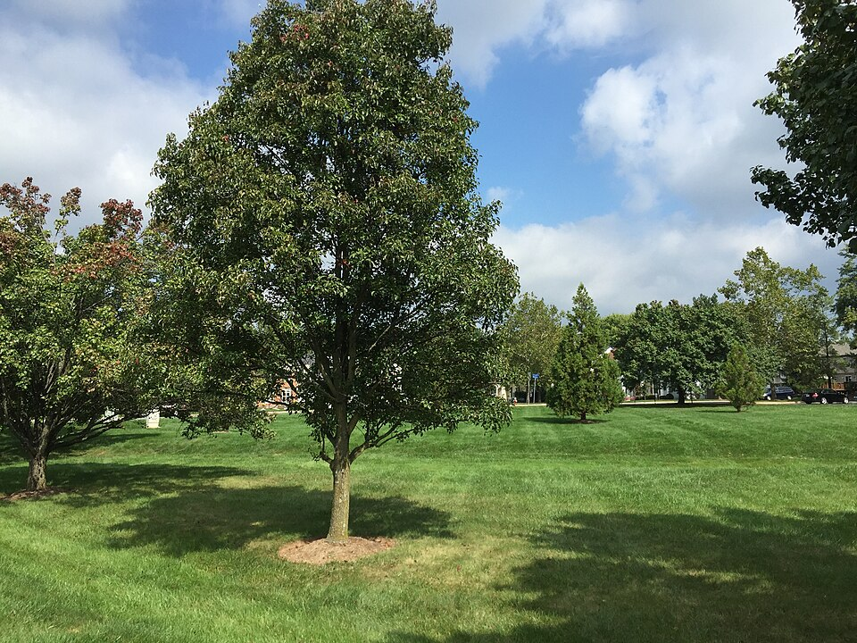

Pyrus — Pear (Peer)
A deceptively tough old-timer who looks like a pastoral fruit-bearer but fights with dense, smooth-grained wood that has outlasted empires — the oldest known individual clocked 458 years.
Combat flavor
Dense, smooth pearwood delivers heavy, precise blows — slow wind-up, high impact — while early-blooming flowers give nearby allies a spring-buff of nectar energy. Wild-type thorn variants could unlock a "Bramble Spike" passive.
Real-world facts
Typical / max height10–15 m typical; up to 20 m in wild specimens; max recorded ~25 m
Lifespan50–250 years for Pyrus communis; ornamental cultivars (P. calleryana) only 15–25 yr; wild trees can reach 458 yr (record)
Wood~690 kg/m³ air-dry; Janka ~7,380 N — harder than oak, fine-grained and dense
Growth speedmedium (ornamentals fast, fruiting trees medium)
Ecology / notable traitsFlowers early in spring, providing critical early nectar; P. calleryana is invasive in eastern North America; wood historically prized for precision instruments and woodblock printing; low natural rot resistance; no thorns on cultivated forms (wild P. pyraster has thorns)
Gallery
